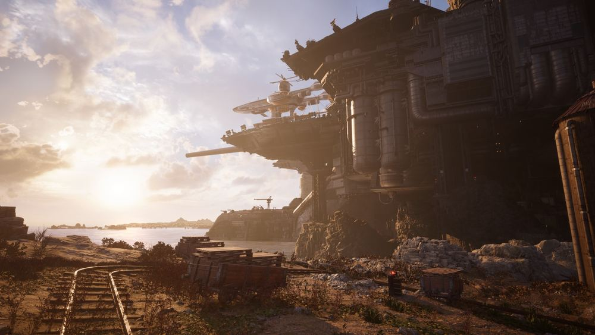
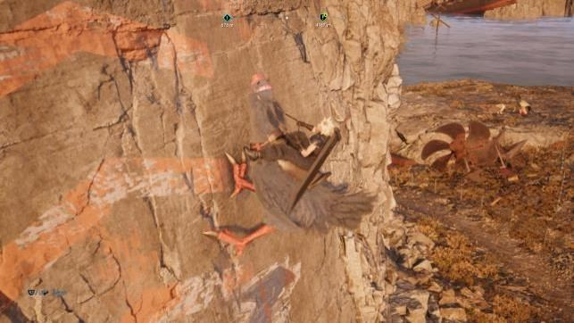

Complément
Région de Junon
L'essentiel
- D'abord : « Une voie de subsistance », puis capture Belle, le chocobo de la région.
- Fort Condor : les quatre rapports d'enquête.
- Plus tard : « Anomalie sous-marine » au chapitre 12, niveau 45.

Junon, la forteresse de la Shinra au bord de la mer · © SQUARE ENIX
Objectif
Porter la deuxième région à 100 % : 4 puits de vie, 1 rapport chocobo, 4 rapports de chasse, 4 rapports d'enquête — qui sont quatre parties de Fort Condor — 1 rapport d'excavation, 3 autels de Phénix plus Phénix au simulateur, 1 rapport mog, 1 rapport secret (Flagelleur mental) et 7 quêtes annexes.
Junon s'ouvre au chapitre 4 et s'atteint depuis la Prairie par les mines de mithril. Les niveaux vont de 20 à 26, sauf une quête à 45 débloquée au chapitre 12.
Deux particularités de cette région. D'abord, presque tout exige un chocobo grimpeur — et ce chocobo s'obtient à travers une quête annexe. Ensuite, les rapports d'enquête ne sont pas des combats : ce sont quatre parties du jeu de plateau Fort Condor, avec leurs propres règles.
Itinéraire
📍 La zone en images : Région de Junon — soluce illustrée sur Millenium, en français.

Le chocobo des montagnes, qui escalade les parois · © SQUARE ENIX
L'ordre de cette région est contraint, bien plus que celui de la Prairie.
- « Une voie de subsistance » chez Gabe, au ranch à l'ouest de l'entrée de la région. Elle t'envoie capturer Belle, le chocobo noir.
- Le rapport chocobo : chocobo des montagnes — c'est Belle. Sans elle, trois puits de vie sur quatre, deux rapports de chasse et deux autels de Phénix sont inaccessibles.
- Terminer « Une voie de subsistance », qui débloque le voyage rapide entre Junon et la Prairie.
- Les tours de transmission, pour révéler la carte.
- Le rapport mog à l'ouest de Nid-de-pie, qui porte la Boutique mog au rang 2.
- « Une petite attention », qui débloque « Le phare publicitaire du cap ».
- Les puits de vie, les chasses, l'excavation et les autels, dans l'ordre que tu veux.
- Les quatre parties de Fort Condor, dans l'ordre imposé, jusqu'à la protorelique du capitaine.
- Le rapport secret (Flagelleur mental, niveau 26).
- « La crainte du débarquement » au chapitre 12, puis « Anomalie sous-marine » au niveau 45.
Déroulé pas à pas
Le rapport chocobo : Belle
⚠️ C'est la première chose à faire dans cette région. Le rapport se débloque dans le cadre de la quête « Une voie de subsistance », donnée par Gabe à son ranch.
Le principe : approcher Belle sans se faire repérer par les autres chocobos, en se servant des mécanismes et en se cachant derrière les chariots en mouvement.
Le pas à pas :
- Actionne le premier chariot et cache-toi derrière pour atteindre le prochain mécanisme.
- Active-le une fois pour faire venir le chariot vers toi, puis ramasse des pierres et positionne-toi près du chariot.
- Lance une pierre sur le mécanisme et suis le chariot jusqu'au bout.
- Pour le troisième chariot, relance une pierre sur le mécanisme en face.
- Cache-toi derrière, en changeant de côté selon la direction du regard des chocobos, et attrape Belle.
Belle est un chocobo noir capable de grimper les parois. C'est la clé de toute la région.
Les quatre puits de vie
Le principe habituel : un hulule-vies — ici un oiseau violet — t'indique le chemin. Suis-le, interagis avec le gisement de mako, appuie au bon moment.
| # | Nom | Où | Chocobo ? |
|---|---|---|---|
| 1 | Puits de vie des cimes | Au nord-est de l'arrêt chocobo à l'entrée de la région ; grimpe aux parois avec le chocobo | Oui |
| 2 | Puits de vie du naufrage | Au sud de la Tour de transmission 3, sur l'île aux bateaux naufragés au centre de la carte ; accessible à la nage depuis la plage | Non |
| 3 | Puits de vie en montagne | Au nord-ouest de Nid-de-pie, juste à l'ouest d'un arrêt de chariot chocobo ; remonte la paroi à droite de l'arrêt, puis traverse la petite étendue d'eau sur la gauche | Oui |
| 4 | Puits de vie du phare | Au sud-ouest de l'entrée du phare ; descends la paroi à droite de l'entrée avec le chocobo | Oui |
Les quatre rapports de chasse
| # | Nom | Niveau | Où | Ennemis | Objectifs |
|---|---|---|---|---|---|
| 1 | Piaillement tapageur | 23 | Au nord-ouest de la Tour de transmission 2 | 1 Vortazu | Fragiliser ; Choc ; 2 min 30 |
| 2 | Un sage des vents | 22 | Au sud-ouest de Nid-de-pie, dans une clairière isolée près de la plage au centre de la carte | 2 Whymzeletts | Choc ; empêcher tout envol pendant Vent régénérateur ; 2 min |
| 3 | Un lézard timide | 22 | Au nord-ouest de Nid-de-pie, dans les montagnes juste au-dessus d'un arrêt chocobo — chocobo requis | 4 Scoriaféroces | Fragiliser ; Choc ; 1 min |
| 4 | Chasseurs tempétueux | 21 | Au sud-ouest de Nid-de-pie, dans les montagnes au sud-ouest d'un arrêt chocobo — chocobo requis | 3 Tornaphons | Fragiliser ; Choc ; 1 min 45 |
Les stratégies :
- Chasse 1 — le Vortazu est sensible au Vent : les Enchaînements éoliens suffisent largement dans les 2 min 30. Lui infliger des dégâts l'incite à lancer Piqué meurtrier, qui fait énormément de dégâts — mais si tu l'esquives, tu le fragilises.
- Chasse 2 — les Whymzeletts sont sensibles à la Glace. La clé de l'objectif : leur infliger des dégâts pendant Vent régénérateur les met en Fragilité, ce qui les empêche de s'envoler. Garde donc une jauge d'ATB en réserve pour lancer un sort de Glace dès qu'ils commencent cette attaque.
- Chasse 3 — les Scoriaféroces sont sensibles à la Glace, et une fois fragilisés par un sort de Glace, ils ne peuvent plus utiliser leurs attaques enflammées. 1 minute pour quatre ennemis : les Enchaînements glacés sont obligatoires.
- Chasse 4 — les Tornaphons sont sensibles au Vent, et les attaques élémentaires de Vent les fragilisent directement. Enchaînements éoliens ou Tornade renversante de Tifa.
Fort Condor : les quatre rapports d'enquête
Les rapports d'enquête de Junon sont quatre parties de Fort Condor, un jeu de plateau que tu connais peut-être par l'épisode INTERmission.
Les règles de base :
- L'objectif principal est d'éliminer le chef ennemi. Pour y arriver, repousse les forces adverses en envoyant les unités adaptées.
- Le triangle à mémoriser : les Assaillants (épée rouge) battent les Artilleurs (arc vert), qui battent les Protecteurs (bouclier bleu), qui battent les Assaillants.
- Place tes personnages devant les unités ennemies et prévois les prochaines vagues en regardant les jauges sur la droite.
Fort Condor 1 — Un vrai naufrage. Au sud-est de la Tour de transmission 2, au niveau d'un gros paquebot échoué sur une falaise. Contourne le bateau.
Cible : le Chef barbare. Tu n'as que 3 minutes pour décimer l'armée ennemie, sinon tu perds. Une formation équilibrée attaque/défense fonctionne bien.
La partie gagnée, une protorelique apparaît — mais un drone s'en emparne, et tu débloques le rapport suivant.
Fort Condor 2 — L'îlot aux décombres. Sur l'îlot sud au centre de la carte. Accessible à la nage depuis la plage, ou en déplacement rapide depuis l'îlot du puits de vie du naufrage.
Cible : le Commandant cuirassé. Formation « défense de siège ».
- Envoie un Protecteur d'élite à droite pour contrer les Assaillants ennemis : ça te fait gagner assez de terrain.
- Place des trébuchets en face du Commandant cuirassé.
- Continue à contrer les ennemis de la même façon jusqu'à percer complètement les défenses.
- Envoie une unité héroïque et des balistes sur le Commandant cuirassé pour conclure.
Un drone kidnappe le Capitaine et la relique, mais tu débloques le rapport suivant.
Fort Condor 3 — À l'ancienne base. Dans un campement sur une falaise au sud de Nid-de-pie, légèrement au nord du pont menant au phare.
Cible : la Tour giga-canon, capable d'envoyer de puissants tirs à distance. Les unités ennemies sont majoritairement des Assaillants : formation « défense de siège ».
- Un Protecteur d'élite à droite et un Soigneur à gauche.
- Double-les respectivement d'un autre Soigneur et d'un Assaillant d'élite.
- Place Trébuchet et Baliste au centre, derrière les lignes ennemies.
- Renouvelle tes unités selon celles de l'adversaire, et n'oublie pas de replacer des Trébuchets et des Balistes devant la Tour giga-canon pour une victoire rapide.
Fort Condor 4 — Vestiges d'un camp. Dans les montagnes au nord-ouest de Nid-de-pie, dans un campement près d'une grande cascade.
Cible : le Sorcier maléfique et ses renégats. Il a peu d'unités, mais elles sont rapides et puissantes, et lui-même a une résistance impressionnante et des capacités d'adaptation.
Formation orientée attaque, avec Barret et Cloud en unités héroïques.
- Un Artilleur avec un Soigneur sur la droite, et 2 Soigneurs sur la gauche.
- Un deuxième Artilleur à droite, et un autre à gauche.
- Un Assaillant en renfort à droite, puis un Protecteur à gauche et 2 Protecteurs à droite, selon l'avancement des ennemis.
- Ensuite, multiplie soit les Artilleurs, soit les Protecteurs pour briser les lignes.
- Sers-toi des unités héroïques quand les ennemis s'agglutinent — c'est aussi le meilleur moyen de se débarrasser vite du Chef barbare.
La voie vers le Sorcier maléfique libérée, il change de type et il faut suivre :
- s'il prend le type Artilleur → envoie des Assaillants ;
- s'il prend le type Protecteur → des Artilleurs ;
- s'il prend le type Assaillant → des Protecteurs. Dans ce type, il peut lancer Pouce, qui immobilise tes unités.
Et l'astuce décisive : utilise les Trébuchets pour lui infliger des dégâts — il faut les placer juste après les débris au centre du terrain pour que les boulets l'atteignent.
La partie gagnée, tu reçois la protorelique du capitaine, suivie d'une cinématique pour le moins étrange.
Le rapport d'excavation
Un seul dans cette région.
Vestiges du cap aux cratères. À l'extrême sud-ouest de la carte, au niveau d'un site de construction. 3 trésors à déterrer au flair du chocobo.
Recettes obtenues : Talisman psychique, Maturité de la planète, Protège-bras de marin +, Amulette en corail doré +, Armille éléphadunk +.
Les trois autels de Phénix
Ici, les pierres guides sont orange. Même principe : brise-la, suis la lueur, puis reproduis l'ordre et le rythme des touches.
| Autel | Où | Chocobo ? |
|---|---|---|
| Autel de Phénix α | Depuis l'arrêt chocobo à l'entrée de la région, part vers le nord. Grimpe aux parois, brise la pierre guide, suis la lueur jusqu'à une grande caverne | Oui |
| Autel de Phénix β | Depuis l'arrêt chocobo au nord-ouest de Nid-de-pie. La pierre guide est juste à l'est de l'arrêt ; suis la lueur jusqu'à une grande caverne | Oui |
| Autel de Phénix γ | Emprunte la sortie sud de Nid-de-pie : la pierre guide est visible ; suis la lueur jusqu'à une grande caverne | Non |
Battre Phénix au simulateur de combat, programme Esper : Phénix.
Phénix est loin d'être l'Esper le plus facile. Sa mauvaise habitude : Souffle de création, qui fait apparaître des monstres.
Tant que les monstres sont sur le terrain :
- tu ne peux pas infliger de dégâts à Phénix ;
- et sa faiblesse à la Glace disparaît, ce qui t'empêche de le fragiliser.
La préparation : une équipe avec des personnages capables de faire des Enchaînements, pour se débarrasser vite des créations de Phénix.
⏳ Et la fenêtre à ne pas rater : envoie tous les sorts de Glace possibles quand il est seul sur le terrain, et surtout quand il lance Feu exaltateur. Interrompre cette attaque le fragilise — et l'empêche de lancer Feu résurrecteur plus tard, une compétence qui inflige énormément de dégâts et lui octroie de nombreux bonus.
Le rapport mog
À l'ouest de Nid-de-pie, une maison de mog en forme de champignon.
Même jeu que dans la Prairie — Minimogs à malice — mais avec une variante : il faut les pousser dans les tourbillons en esquivant leurs attaques, puis maintenir L2 pour les porter jusqu'à la maison. Trois coups reçus et tu perds.
Les 5 minimogs ramenés, la Boutique mog passe au rang 2.
Ce qu'on peut y acheter :
| Objet | Prix |
|---|---|
| Éther ×2 | 1 médaille |
| Rubis ×12 | 10 médailles |
| Émeraude ×13 | 10 médailles |
| Pendantéria PV augmentés ×1 | 6 médailles |
| Pendantéria Garde précise renforcée ×1 | 6 médailles |
| Codex Secrets de la planète II ×1 | 6 médailles |
| Codex Chronique du guerrier rutilant I ×1 | 6 médailles |
| Codex Combat à l'épée I ×1 | 6 médailles |
| Codex Techniques d'arts martiaux I ×1 | 6 médailles |
Le rapport secret : Flagelleur mental
Niveau recommandé : 26. Sur une île au sud de la carte, celle à l'est du puits de vie du naufrage.
Le Flagelleur mental n'est sensible à aucun type d'attaque élémentaire — et il est légèrement résistant à toutes les attaques magiques et physiques. Autrement dit, tu auras du mal à lui faire des dégâts sérieux par les moyens normaux.
La solution est unique et nette : les compétences synchronisées le fragilisent instantanément. Utilise un maximum de compétences d'armes pour en déclencher le plus possible. C'est tout le combat.
Il utilise principalement des attaques magiques — sorts de Foudre et compétences qui infligent des altérations d'état. Équipe des accessoires qui protègent des altérations.
Les sept quêtes annexes
Une voie de subsistance. Niveau 20. Tableau d'annonces de Sous-Junon, ou directement Gabe à son ranch, à l'ouest de l'entrée de la région.
⚠️ C'est la quête qui débloque le chocobo, donc la première à lancer.
- Gabe veut réparer son chariot — mais l'artisan qui fabrique les pièces est dans les montagnes, donc il faut un chocobo grimpeur. Continue vers l'ouest pour capturer Belle (voir le rapport chocobo).
- Belle attrapée, va à l'est du ranch de Gabe parler à l'artisan : suis le chemin du puits de vie des cimes, puis monte les escaliers au sud.
- Réveille l'artisan — la méthode douce fonctionne — et il te donne une liste de matériaux.
- Rends-toi à la Tour d'activation 1 près du ranch de Gabe et utilise le flair de ton chocobo pour déterrer les matériaux.
- Retourne voir l'artisan — il y a un point de déplacement rapide jusqu'à son atelier — et il te remet les pièces.
- Rapporte-les à Gabe.
Récompense : des ressources, une armille de protecteur de la reine, le voyage rapide entre la région de Junon et la région de la Prairie, et de l'affinité avec Aerith.
Une petite attention. Niveau 21. Tableau d'annonces de Sous-Junon, ou Rhonda à côté de l'auberge.
Elle te demande d'accompagner son chien, Cabillaud, pour remettre de l'argent à son fils à Nid-de-pie. Retrouve Cabillaud à l'entrée de Sous-Junon et protège-le des monstres.
Rien de méchant jusqu'aux alentours de la Tour de transmission 4, où t'attendent 2 Khamsyvernes — des monstres volants capables de te pétrifier. Empoisonne-les avec Vénéfice et multiplie les sorts et compétences de Vent. Attaque-les par derrière au maximum pour les fragiliser plus vite et éviter les dégâts.
À l'arrivée, Toby te remet des ressources de synthèse et un Codex Combat à l'arme à feu pour Barret.
Récompense : ressources, Codex Combat à l'arme à feu, et de l'affinité avec Barret. Elle débloque aussi « Le phare publicitaire du cap ».
La fête à la grenouille ! Niveau 22. Tableau d'annonces de Sous-Junon.
Rends-toi au bout des quais de Sous-Junon, dans une zone couverte d'une mystérieuse brume rose. Cette fumée transforme les humains en grenouilles : tu vas te battre avec l'altération Batracien.
Ce n'est pas un handicap : la compétence Saut de grenouille est très efficace, et tu peux te soigner en crachant et en éclatant des bulles.
Les monstres vaincus, parle aux enfants : ils t'invitent à une partie de Saute-grenouille, un mini-jeu où il faut rester le plus longtemps possible sur une plateforme en évitant les obstacles.
Reste sur la plateforme au moins 30 secondes pour remporter une Bague batracienne.
Récompense : Bague batracienne et de l'affinité avec Tifa.
Le phare publicitaire du cap. Niveau 23. Toby au village de Nid-de-pie, après avoir terminé « Une petite attention ».
Il te demande de convaincre la « mercenaire » installée au phare de déguerpir. Prends la direction du sud depuis Nid-de-pie et traverse le pont.
Sur place, monte les escaliers pour rencontrer Kyrié. Des monstres surgissent au niveau inférieur : repose-toi sur le banc avant de redescendre.
Trois vagues :
- des Flans, qui n'apprécient pas le Feu ;
- des Néroféroces, qui n'aiment pas la Glace ;
- puis davantage de Flans, et enfin deux Mousses blanches.
Les Mousses blanches résistent aux attaques physiques et n'ont aucune sensibilité particulière. Tu peux les fragiliser avec des sorts élémentaires — mais elles deviennent résistantes à l'élément que tu viens d'utiliser, jusqu'à ce que tu lances un sort d'un autre type. Varie tes matérias élémentaires.
Récompense : de l'harnachement pour chocobo et de l'affinité avec Red XIII.
Désir d'azur. Niveau 23. Tableau d'annonces de Nid-de-pie.
- Prends les escaliers en bois du côté ouest de Nid-de-pie et suis le chemin jusqu'au camp d'observation. Parle au vieil homme : il te demande de prendre des nouvelles du Condor de la région.
- Rends-toi dans la Forêt des chasseurs, au sud du rapport mog. Tu vois une vache : approche-toi en douceur.
- Elle prend la fuite : retrouve sa trace au flair de ton chocobo. Tu la retrouves en contrebas, attaquée par des Néroféroces — à expédier à la Glace.
- Un énorme monstre s'emparne de la vache : suis sa piste olfactive jusqu'à une grotte d'où s'échappe un rugissement.
- Suis le chemin montagneux : tu trouves le Dragon mystique.
Le Dragon mystique est puissant et rapide, mais il a le Vent pour faiblesse et son état de Fragilité dépend du nombre de dégâts infligés : multiplie les Enchaînements éoliens et les sorts de Vent pour le choquer vite. Attention à ses attaques physiques, qui font de lourds dégâts ; il peut aussi souffler du feu en tournant sur lui-même ou te viser avec précision.
Puis vient un choix : tu dois décider quoi emporter entre la chair du bovidé, la chair de la créature et les légumes inconnus.
Prends la chair du bovidé. C'est le bon choix : tu ne verras le Condor que si tu as pris le bon type de nourriture.
Ramène l'offrande au camp d'observation.
Récompense : une photo du condor, la matéria Résistance aux altérations, et de l'affinité avec Tifa.
La crainte du débarquement. Aucun niveau recommandé. Tableau d'annonces de Sous-Junon, à partir du chapitre 12.
Parle à Priscilla sur les quais. Les enfants ont peur de la guerre imminente, et il faut leur remonter le moral avec un Spectacle de dauphin.
C'est le même mini-jeu que le chapitre 4 : frappe le plus de ballons possible pour accélérer, en évitant les obstacles. Il faut terminer en moins de 2 minutes.
La récompense dépend de ton temps :
| Temps | Récompense |
|---|---|
| 2 minutes | 1 Élixir |
| 1 min 48 s | 1 Cosmolite enchantée |
| 1 min 40 s | 3 Orbes de matière sombre |
Récompense : l'objet correspondant à ton temps, de l'affinité avec Yuffie, et le déblocage de la quête suivante.
Anomalie sous-marine. Niveau 45. Tableau d'annonces de Sous-Junon, après « La crainte du débarquement ».
Parle aux soldats sur la côte au sud du rapport d'enquête 1, près du cratère. Accepte de les aider et suis-les.
C'est une poursuite en trois temps contre le Cavalier de l'enfer VR2.
- Premier combat : il est faible à la Glace.
- Il frappe surtout au physique et crache parfois du Feu : spamme l'esquive.
- Il est rapide et peut esquiver tes sorts de Glace : attends qu'il se dresse sur ses pattes arrière pour les lancer.
- Il fuit en laissant un morceau de queue. Piste-le au flair du chocobo jusqu'à la côte au nord du rapport secret. Il fuit encore et te laisse un Tornaphon et un Vortazu, sensibles au Vent. Garde le doigt sur R1 pour bloquer les coups de bec incessants du Vortazu, et multiplie Enchaînements éoliens et Extra-Vent.
- Reprends la piste au flair jusqu'à la Forteresse détruite, à l'ouest du rapport d'enquête 3. Le combat final est bien plus dur :
- Il utilise Miroir et Bouclier : équipe absolument la matéria Annihilation sur un personnage.
- Salve magnétique est un rayon laser qui fait beaucoup de dégâts — mais il tire en ligne droite, donc esquivable.
- Et le détail qui change tout : surveille sa couleur, elle indique sa polarité. En jaune, certaines de ses attaques te repoussent ; en rouge, elles t'attirent vers lui.
Récompense : un Codex Secrets de la planète VI pour Aerith et de l'affinité avec Aerith.
Quêtes et lieux
Récapitulatif des activités de Junon
| Type | Nombre | Détail |
|---|---|---|
| Puits de vie | 4 | 3 sur 4 exigent le chocobo |
| Rapport chocobo | 1 | Belle, le chocobo noir grimpeur |
| Rapports de chasse | 4 | Niveaux 21 à 23 ; 2 exigent le chocobo |
| Rapports d'enquête | 4 | Quatre parties de Fort Condor → protorelique du capitaine |
| Rapport d'excavation | 1 | 3 trésors |
| Autels Esper | 3 | Phénix ; 2 exigent le chocobo |
| Rapport mog | 1 | Boutique mog de rang 2 |
| Rapport secret | 1 | Flagelleur mental, niveau 26 |
| Quêtes annexes | 7 | Niveaux 20 à 23, plus une à 45 |
Les lieux de la région
| Lieu | Ce qu'on y trouve |
|---|---|
| Sous-Junon | Tableau d'annonces (4 quêtes), Rhonda près de l'auberge, Priscilla sur les quais, bout des quais (brume rose) |
| Nid-de-pie | Tableau d'annonces (Désir d'azur), Toby, escaliers en bois côté ouest (camp d'observation), sortie sud (autel de Phénix γ) |
| Ranch de Gabe (ouest de l'entrée) | Gabe ; Tour d'activation 1 à proximité ; artisan à l'est |
| Arrêt chocobo de l'entrée | Puits de vie 1 au nord-est ; autel de Phénix α au nord |
| Arrêt chocobo au nord-ouest de Nid-de-pie | Puits de vie 3 à l'ouest ; autel de Phénix β à l'est ; chasse 3 au-dessus |
| Île aux bateaux naufragés | Puits de vie 2 ; accessible à la nage |
| Île à l'est de la précédente | Rapport secret : Flagelleur mental |
| Îlot sud du centre de la carte | Fort Condor 2 |
| Paquebot échoué (sud-est de la Tour 2) | Fort Condor 1 |
| Campement au sud de Nid-de-pie | Fort Condor 3, au nord du pont du phare |
| Campement près de la grande cascade (nord-ouest) | Fort Condor 4 |
| Phare | Quête Le phare publicitaire du cap ; puits de vie 4 au sud-ouest |
| Forêt des chasseurs (sud du rapport mog) | Quête Désir d'azur |
| Camp d'observation | Vieil homme ; le Condor si tu rapportes la bonne offrande |
| Vestiges du cap aux cratères (extrême sud-ouest) | Rapport d'excavation |
| Forteresse détruite (ouest du Fort Condor 3) | Combat final d'Anomalie sous-marine |
| QG des Nids-de-pie | Inaccessible au chapitre 4 ; s'ouvre plus tard |
Butin exhaustif
| Nom exact | Type | Où / comment l'obtenir | Utilité |
|---|---|---|---|
| Belle | Chocobo noir | Rapport chocobo : chocobo des montagnes | Grimpe les parois — indispensable à la région |
| Matéria Phénix renforcée | Matéria d'invocation rouge | Battre Phénix au simulateur ; plus puissante selon le nombre d'autels | Invoque Phénix |
| Protorelique du capitaine | Protorelique | Fort Condor 4 | Une des sept protoreliques |
| Armille de protecteur de la reine | Accessoire | Quête Une voie de subsistance | effet exact à vérifier en jeu |
| Voyage rapide Junon ↔ Prairie | Déblocage | Quête Une voie de subsistance | Confort de déplacement |
| Codex Combat à l'arme à feu | Codex Barret | Quête Une petite attention | Points de codex |
| Bague batracienne | Accessoire | Quête La fête à la grenouille ! : 30 s au Saute-grenouille | effet exact à vérifier en jeu |
| Harnachement pour chocobo | Équipement de course | Quête Le phare publicitaire du cap | Améliore le chocobo en course |
| Photo du condor | Objet de collection | Quête Désir d'azur, avec la chair du bovidé | Objet de collection |
| Matéria Résistance aux altérations | Matéria bleue soutien | Quête Désir d'azur | Protège des altérations d'état |
| Élixir | Consommable | Quête La crainte du débarquement, en 2 min | Restaure tous les PV et PM |
| Cosmolite enchantée | Matériau | Quête La crainte du débarquement, en 1 min 48 s | Matériau de synthèse rare |
| Orbe de matière sombre ×3 | Matériau | Quête La crainte du débarquement, en 1 min 40 s | La meilleure récompense du mini-jeu |
| Codex Secrets de la planète VI | Codex Aerith | Quête Anomalie sous-marine (niveau 45) | Points de codex |
| Puce : Talisman psychique | Recette | Rapport d'excavation | Synthèse |
| Puce : Maturité de la planète | Recette | Rapport d'excavation | Synthèse |
| Puce : Protège-bras de marin + | Recette | Rapport d'excavation | Synthèse |
| Puce : Amulette en corail doré + | Recette | Rapport d'excavation | Synthèse |
| Puce : Armille éléphadunk + | Recette | Rapport d'excavation | Synthèse |
| Éther ×2 | Consommable | Boutique mog, 1 médaille | Restaure des PM |
| Rubis ×12 | Pierre précieuse | Boutique mog, 10 médailles | Synthèse / vente |
| Émeraude ×13 | Pierre précieuse | Boutique mog, 10 médailles | Synthèse / vente |
| Pendantéria PV augmentés | Accessoire à matéria | Boutique mog, 6 médailles | Accessoire avec emplacement |
| Pendantéria Garde précise renforcée | Accessoire à matéria | Boutique mog, 6 médailles | Accessoire avec emplacement |
| Codex Secrets de la planète II | Codex Aerith | Boutique mog, 6 médailles | Points de codex |
| Codex Chronique du guerrier rutilant I | Codex | Boutique mog, 6 médailles | Points de codex |
| Codex Combat à l'épée I | Codex Cloud | Boutique mog, 6 médailles | Points de codex |
| Codex Techniques d'arts martiaux I | Codex Tifa | Boutique mog, 6 médailles | Points de codex |
| Études de région | Textes | Les 4 puits de vie | Histoire des lieux |
Conseils et pièges
Les ennemis de la région
| Ennemi | Point faible | À savoir |
|---|---|---|
| Vortazu | Vent | Piqué meurtrier fait énormément de dégâts — l'esquiver le fragilise. R1 contre ses coups de bec |
| Whymzelett | Glace | Le frapper pendant Vent régénérateur le fragilise et l'empêche de s'envoler |
| Scoriaféroce | Glace | Fragilisé à la Glace, il ne peut plus utiliser ses attaques enflammées |
| Tornaphon | Vent | Les attaques de Vent le fragilisent directement |
| Khamsyverne | Vent | Volant et pétrifiant. Vénéfice + attaques par derrière |
| Flan | Feu | — |
| Néroféroce | Glace | — |
| Mousse blanche | — (aucune) | Résiste au physique ; les sorts élémentaires la fragilisent — mais elle devient résistante à l'élément qu'on vient d'utiliser : varie |
| Dragon mystique | Vent | Puissant et rapide ; sa Fragilité dépend des dégâts cumulés. Souffle du feu en tournant |
| Cavalier de l'enfer VR2 | Glace | Lance la Glace quand il se met sur ses pattes arrière. Au 3e combat : Miroir et Bouclier → Annihilation obligatoire ; Salve magnétique en ligne droite ; sa couleur indique sa polarité (jaune = repousse, rouge = attire) |
| Flagelleur mental | — (aucune) | Résistant au magique et au physique. Les compétences synchronisées le fragilisent instantanément |
| Phénix (Esper) | Glace | Souffle de création : tant que ses monstres sont là, il est intouchable et perd sa faiblesse à la Glace. Enchaînements pour nettoyer, puis Glace — surtout pendant Feu exaltateur, dont l'interruption l'empêche de lancer Feu résurrecteur |
Fort Condor en une minute
- Le triangle : Assaillant (épée rouge) > Artilleur (arc vert) > Protecteur (bouclier bleu) > Assaillant.
- Regarde les jauges sur la droite pour anticiper les vagues.
- Les Trébuchets et les Balistes sont ce qui tue les cibles fixes (Tour giga-canon, Commandant cuirassé) — place-les derrière les lignes ennemies.
- Les unités héroïques servent à nettoyer les agglutinements, pas à percer.
- Contre le Sorcier maléfique, son type change : suis le triangle à chaque fois, et place les Trébuchets juste après les débris au centre pour l'atteindre.
Le reste
- Fais « Une voie de subsistance » en premier. Sans Belle, trois puits de vie, deux chasses et deux autels de Phénix sont hors d'atteinte — soit plus de la moitié de la région.
- La quête débloque aussi le voyage rapide Junon ↔ Prairie, qui te fera gagner un temps considérable sur toute la suite du jeu.
- « Une petite attention » débloque « Le phare publicitaire du cap ». Fais-la avant de chercher Toby.
- Prends la chair du bovidé dans « Désir d'azur ». Les deux autres offrandes ne font pas venir le Condor, et donc pas de photo ni de matéria.
- Vise 1 min 40 au Spectacle de dauphin. Les 3 Orbes de matière sombre valent largement l'Élixir de la version lente.
- Garde Annihilation pour la fin. Elle est obligatoire contre le Cavalier de l'enfer VR2 du troisième combat d'« Anomalie sous-marine », et très utile contre Phénix.
- Le Flagelleur mental se joue aux compétences synchronisées, pas aux éléments. C'est le seul combat de la région où ton build élémentaire ne sert à rien.
- Varie les éléments contre les Mousses blanches. Rester sur le Feu ou la Glace ne fait plus rien du tout au bout de deux sorts.
Alertes
- ⚠️ Ordre obligatoire : « Une voie de subsistance » → capture de Belle → le reste de la région. Trois puits de vie, deux chasses et deux autels exigent le chocobo grimpeur.
- ⚠️ « Le phare publicitaire du cap » n'apparaît qu'après « Une petite attention ».
- ⚠️ « Anomalie sous-marine » n'apparaît qu'après « La crainte du débarquement », elle-même disponible au chapitre 12, et elle demande le niveau 45.
- ⚠️ Choix irréversible dans « Désir d'azur » : prends la chair du bovidé, sinon pas de Condor, pas de photo, pas de matéria.
- ⚠️ Fort Condor 1 est limité à 3 minutes.
- ⚠️ Rapport mog : 3 coups reçus et la partie est perdue.
- ⚠️ Équipe Annihilation avant le troisième combat d'« Anomalie sous-marine » : sans elle, Miroir et Bouclier rendent le Cavalier de l'enfer VR2 quasiment invulnérable.
- ⚠️ Phénix est intouchable tant que ses créations sont vivantes, et il perd sa faiblesse à la Glace pendant ce temps.
- ⚠️ Le QG des Nids-de-pie est inaccessible au chapitre 4 et s'ouvre plus tard dans l'histoire.
- ⚠️ Erreur de la source : la page du rapport mog de Junon de jeuxvideo.com est titrée « Région de la Prairie » par erreur ; son contenu décrit bien Junon (maison à l'ouest de Nid-de-pie, boutique de rang 2). Le guide suit le contenu, pas le titre.
- ⚠️ Effets à vérifier en jeu : armille de protecteur de la reine et bague batracienne.
Check-list
Chocobo et puits de vie
- Belle capturée (rapport chocobo : chocobo des montagnes)
- Puits de vie des cimes (chocobo)
- Puits de vie du naufrage (à la nage)
- Puits de vie en montagne (chocobo)
- Puits de vie du phare (chocobo)
Rapports de chasse
- 1 — Piaillement tapageur (Vortazu)
- 2 — Un sage des vents (sans envol pendant Vent régénérateur)
- 3 — Un lézard timide (chocobo, 1 min)
- 4 — Chasseurs tempétueux (chocobo)
Fort Condor
- Fort Condor 1 — Un vrai naufrage (Chef barbare, 3 min)
- Fort Condor 2 — L'îlot aux décombres (Commandant cuirassé)
- Fort Condor 3 — À l'ancienne base (Tour giga-canon)
- Fort Condor 4 — Vestiges d'un camp (Sorcier maléfique)
- Protorelique du capitaine obtenue
Excavation, Esper, mog, secret
- Rapport d'excavation — Vestiges du cap aux cratères (3 trésors)
- Autel de Phénix α (chocobo)
- Autel de Phénix β (chocobo)
- Autel de Phénix γ (sortie sud de Nid-de-pie)
- Phénix vaincu au simulateur
- Minimogs à malice réussi, Boutique mog de rang 2 ouverte
- Flagelleur mental vaincu (compétences synchronisées)
Quêtes annexes
- Une voie de subsistance (affinité Aerith + voyage rapide)
- Une petite attention (affinité Barret)
- La fête à la grenouille ! (30 s au Saute-grenouille, affinité Tifa)
- Le phare publicitaire du cap (affinité Red XIII)
- Désir d'azur (chair du bovidé, affinité Tifa)
- La crainte du débarquement (viser 1 min 40, affinité Yuffie)
- Anomalie sous-marine (niveau 45, Annihilation, affinité Aerith)
Divers
- Toutes les tours de transmission activées
- Caisses Shinra des tours brisées (médailles mog)
- Boutique mog de rang 2 dévalisée